Información Académica
Datos Personales
Nombre: Luigui Santiago Moreno Guerra
Universidad: Institución Universitaria de El Espinal - UNIESPINAL
Carrera: Tecnología en Gestión Informática
Semestre: 5-B
Asignatura
Materia: Sociología
Profesor: Jose Alvaro Diaz Peña
Horario: Lunes 8-10 PM
Explora la influencia de los contextos sociales en las prácticas lectoras, analizando cómo el entorno moldea nuestra interpretación del mundo.
Habilidades
- Investigación Académica
- Análisis de Lectura
- Pensamiento Crítico
- Socializacion de Ideas
- Organización de Contenidos
- Uso de Herramientas Digitales
- Excelencia Académica
Tabla de Contenido
- 1. Primer Corte
- 2. Segundo Corte
-
3. Tercer Corte
- Próximamente...
Primer Corte
Los Nadies
Introducción
El texto Los Nadies es una reflexión crítica sobre la desigualdad social y la invisibilización de las personas marginadas. A través de un lenguaje poético pero contundente, el autor denuncia cómo millones de personas son excluidas del reconocimiento social, reducidas a números o simples recursos dentro de un sistema que no valora su dignidad. En esta lectura, Galeano no solo habla de pobreza económica, sino también de exclusión, discriminación cultural y falta de oportunidades. El texto invita a cuestionar la manera en que la sociedad percibe a quienes viven en condiciones vulnerables y nos lleva a reflexionar sobre el valor humano más allá de lo material.
Autor: Eduardo Galeano (1940-2015)
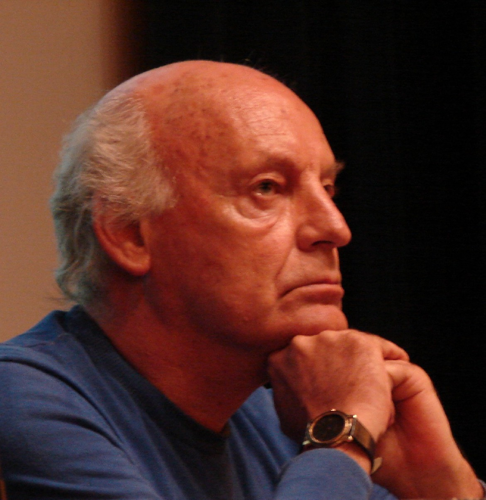
Biografía
Fue un escritor y periodista, reconocido por su comportamiento social y político. Desde joven trabajo en el periodismo y, debido a las dictaduras en Uruguay y Argentina, vivió varios años en el exilio hasta regresar a su país en 1985. Su obra más famosa es Las Venas Abiertas de América Latina, donde analiza la explotación histórica del continente. También escribió Memoria del Fuego y Libro de los Abrazos. Se destaco por dar voz a los sectores marginados y por denunciar la injusticia social en América Latina.
Glosario
Cántaros
Representa abundancia o exceso. Dentro del texto la reflexión sugiere la esperanza o el anhelo desesperado de las personas marginadas de que la "buena suerte" llegue de manera masiva, lo que refleja una expectativa pasiva frente al destino y la dependencia de factores externos para cambiar la realidad.
Cronica Roja
Representa el espacio mediático donde las personas solo adquieren visibilidad a través de la tragedia. Refleja una sociedad que reconoce a ciertos individuos únicamente en el contexto de la violencia o la muerte.
Dialectos
Se refiere a variantes de una lengua que expresan identidad cultural. En el texto se usa para señalar como el poder jerarquiza las formas de hablar, considerado una "superiores" y otras "inferiores", lo que implica discriminación cultural.
Ninguneados
Concepto relacionado con la negación del reconocimiento del otro. Implica la desvalorización de la dignidad humana, donde una persona es invisibilizada y reducida socialmente a "nadie".
Profesar
Acto de adherirse conscientemente a una creencia o sistema de pensamiento, esto implica identidad, convicción y libertad de conciencia.
Recursos Humanos
Es la forma en que el sistema economico reduce a las personas a instrumanetos de producción, en lugar de reconocerlos como sujetos con dignidad, historia y valor propio, se les concibe como medios utiles para cumplir funciones dentro de una estructura.
Supersticiones
Creencias basadas en el pensamiento mágico o irracional, que sustituyen la reflexión critica y el conocimiento racional, devslorizan la fe que tienen hacia la religión.
Mapa Mental

Puedes visualizar el desarrollo de la actividad directamente en el navegador o descargar el documento en formato PDF.
Sobre la lectura
Introducción
El texto Sobre la lectura nos invita a reflexionar sobre el verdadero sentido de leer. A lo largo del escrito, se plantea que la lectura no debe entenderse como una actividad mecánica o una simple obligación académica, sino como un ejercicio de pensamiento, interpretación y esfuerzo personal, cuestionando la manera superficial en que muchas veces asumimos los textos y propone que leer implica producir conocimiento, no solo consumir información.
Autor: Estanislao Zuleta (1935-1990)
Biografía
Filosofo, ensayista y pensador Colombiano reconocido por su profunda reflexión sobre la educación, la lectura y el pensamiento critico. Nació en Medellín y fue un intelectual autodidacta, es decir, se formo principalmente a través de la lectura independiente, defendía la importancia de la dificultad del aprendizaje y criticaba la educación superficial. Sus obras importantes Elogio de la Dificultad, Educación y Democracia, Tres Rescates
Autor: Franz Kafka (1883-1924)
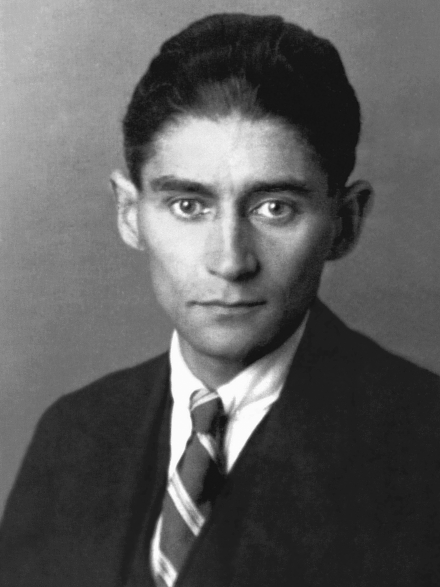
Biografía
Escritor nacido en Praga, uno de los autores mas importantes de la literatura del siglo XX. Kafka desafía a los lectores porque sus textos nos son fáciles de interpretar, sus obras se caracterizan por presentar situaciones angustiosas, absurdas y complejas, donde los personajes enfrentan sistemas incomprensibles y opresivos, las mas conocidas La Metamorfosis, El Proceso y El Castillo.
Autor: Friedrich Nietzsche (1844-1900)
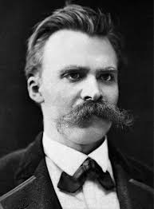
Biografía
Filosofo Alemán que influyo profundamente en el pensamiento moderno. Critico la moral tradicional, la religión y las ideas establecidas de su época. Sus pensamientos influyo en la filosofía contemporánea, la psicología y la literatura. Sus obras importantes fueron Asi hablo Zaratustra, Mas allá del bien y el mal, el nacimiento de la tragedia.
Glosario
Código Común
Es la base que hace posible la comunicación, pues presupone una comunidad de sentido que articula signos, conceptos y referencias culturales.
Espíritu Rebelde
Es la actitud critica del sujeto que se opone a la imposición de valores, normas o verdades establecidas. Representa la negación consciente de la autoridad externa para afirmar la autonomía del pensamiento.
Interpretación
Proceso mediante el cual el sujeto comprende y atribuye sentido a un texto, discurso o realidad.
Fiesta del Conocimiento
Alude a la experiencia activa y gozosa del saber, indica que el conocimiento no es mera acumulación de datos, sino participación viva del sujeto en la construcción de sentido, donde el aprender se convierte en ejercicio libre y creativo del pensamiento.
Rumiante
Es el sujeto que medita, reflexiona lenta y profundamente sobre las ideas, volver sobre un pensamiento y digerirlo intelectualmente.
Mapa Mental

Puedes visualizar el desarrollo de la actividad directamente en el navegador o descargar el documento en formato PDF.
Todo Hombre Necesita Contar Con Un "Parresiasté"
Introducción
El texto que habla sobre la parresía, desarrollado desde el pensamiento de Michel Foucault, aborda la importancia de decir la verdad con valentía y compromiso ético. Explica cómo la parresía no es simplemente hablar con sinceridad, sino asumir el riesgo de expresar una verdad crítica con responsabilidad y conciencia. La lectura invita a reflexionar sobre la autenticidad, la integridad y el papel que cumple la verdad en las relaciones personales, profesionales y sociales. En este sentido, plantea que la parresía es una práctica fundamental para el crecimiento individual y para la construcción de una sociedad más transparente y justa.
Autor: Michel Foucault (1926-1984)
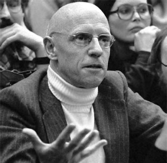
Biografía
Fue filósofo, historiador e intelectual Francés del siglo XX, reconocido por sus profundos estudios sobre la relación entre poder, conocimiento y verdad, analizando como las sociedades construyen lo que consideran "normal" o "verdadero" a través de instituciones como la prisión, el hospital, la escuela y los discursos científicos; en obras como Vigilar y Castigar y Historia de la Sexualidad explico como el poder no solo se ejerce desde el Estado, sino también en la vida cotidiana mediante normas, vigilancia y practicas sociales que moldean la conducta humana; en sus últimos años se centro en la ética y en el "cuidado de si", definió la parresia como el acto valiente de decir la verdad aun cuando implique riesgo personal, destacando que la libertad no consiste solo en oponerse al poder, sino en desarrollar una actitud critica, reflexiva y responsable frente a uno mismo y a la sociedad.
Glosario
01 Adulación
01 Adulación
Acción de halagar de manera exagerada o falsa con el fin de obtener beneficios. Se opone a la parresia, porque en lugar de decir la verdad, busca agradar o manipular.
02 Adulador
02 Adulador
Persona que practica la adulación. El adulador aparenta amistad, pero actúa por interés, ocultando la verdad para beneficio propio.
03 Arma de Doble Filo
03 Arma de Doble Filo
Expresión que indica que algo puede tener consecuencias positivas o negativas. En la parresia, decir la verdad puede fortalecer relaciones o generar conflictos si no hay prudencia.
04 Habilidades Críticas
04 Habilidades Críticas
Capacidades reflexivas que permiten cuestionar ideas y analizar situaciones. Son fundamentales para el autoconocimiento y el crecimiento personal.
05 Manipulación
05 Manipulación
Uso intencional del lenguaje para influir en otros con fines personales. Contradice la autenticidad y el respeto ético hacia el otro.
06 Parresia
06 Parresia
Concepto griego que significa "decirlo todo". Es la práctica ética de decir la verdad con franqueza, asumiendo el compromiso moral y el riesgo personal.
07 Parresiastés
07 Parresiastés
Es quien practica la parresia. Persona valiente y responsable que prioriza la verdad sobre el deseo de agradar o el interés personal.
08 Philautía
08 Philautía
Significa "amor propio". Puede ser egoísmo excesivo o un cuidado saludable de uno mismo basado en el reconocimiento de la verdad personal.
09 Retórica
09 Retórica
El arte de persuadir mediante el lenguaje. A diferencia de la parresia, puede usarse para convencer sin necesidad de compromiso con la verdad.
Mapa Mental
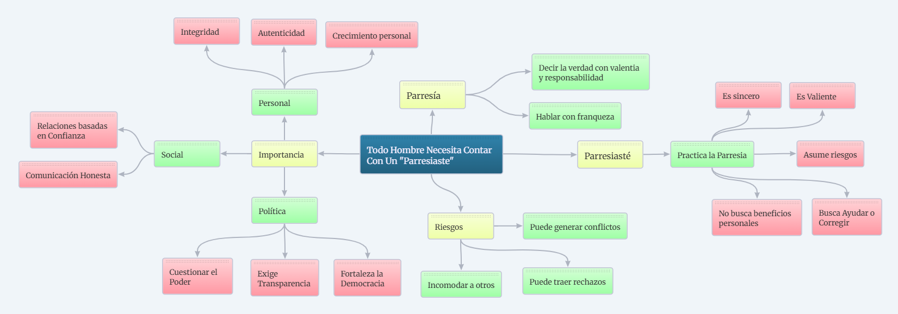
Puedes visualizar el desarrollo de la actividad directamente en el navegador o descargar el documento en formato PDF.
Descolonizar la Universidad: Tejiendo Posibilidades para una Educación Alternativa y Alterativa
Introducción
El texto sobre la descolonización de la universidad propone una reflexión crítica sobre el modelo tradicional de educación. Analiza cómo muchas universidades han reproducido estructuras eurocéntricas y enfoques fragmentados del conocimiento, dejando de lado otras formas de saber y experiencias culturales. La lectura plantea la necesidad de repensar la educación para que sea más inclusiva, interdisciplinaria y comprometida con la justicia social y ambiental. En esencia, invita a transformar la universidad en un espacio que forme personas críticas, autónomas y conscientes de su responsabilidad frente a la sociedad.
Glosario
01
Dominación Social
Ejercicio del poder que busca mantener la supremacía de ciertos grupos sobre otros a través de las instituciones (como la universidad tradicional), generando desigualdades.
02
Educación Alienada
Estado en el que el proceso educativo separa al individuo de su propia realidad y necesidades, convirtiéndolo en un sujeto que trabaja para fines ajenos, sin conciencia de su propia opresión.
03
Epistemología
Rama de la filosofía que estudia la naturaleza, el origen y la validez del conocimiento. Se centra en la lucha de que saberes son considerados científicos y cuales son ignorados.
04
Estructuras Jerarquicas
Formas de organización social y académica basadas en la subordinación y el mando vertical, que impiden la participación democrática y la construcción colectiva de saberes.
05
Justicia Cognitiva
Concepto que afirma que no existe justicia social sin el reconocimiento de la validez de los diversos saberes (populares, indígenas, ancestrales) frente al monopolio de la ciencia moderna.
06
Paradigma Mecanicista
Compara al universo y la sociedad con una maquina, fragmentando la realidad en partes aisladas para estudiarlas, perdiendo de vista la conexión vital y orgánica entre los seres humanos y la naturaleza.
07
Pensamiento Eurocéntrico
Perspectiva que impone la historia y los valores de Europa Occidental como el único modelo universal del progreso y verdad, invisibilizando otras formas de vida y pensamiento.
08
Proyecto Alterativo
Una propuesta que busca una "alteridad" (un otro camino), alejándose de los modelos impuestos para construir alternativas basadas en el equilibrio y la armonía con el medio.
09
Sustentabilidad Ambiental
Principio ético y técnico que busca el equilibrio entre el desarrollo humano y la preservación de los ciclos biológicos de la Tierra para las generaciones futuras.
10
Transformación Social
Proceso de cambio profundo en las estructuras económicas, políticas y culturales de una sociedad para alcanzar mayores niveles de justicia y equidad.
11
Universidad Ecosocial
Modelo educativo que integra la justicia social con la sustentabilidad ambiental, formando profesionales críticos capaces de responder a la crisis ecológica actual.
12
Universidad Humboldtiana
Modelo de universidad clásica que integra la enseñanza con la investigación y busca la autonomía académica, pero que sigue operando bajo una lógica racionalista occidental.
13
Verdades Absolutas
Pretensión de poseer un conocimiento incuestionable y universal que no admite critica ni diversidad, utilizando históricamente como herramienta el control institucional.
Mapa Mental

Puedes visualizar el desarrollo de la actividad directamente en el navegador o descargar el documento en formato PDF.
¿Qué es la Ilustración según Kant?
Introducción
El texto de la Ilustración de Kant nos invita a reflexionar sobre la importancia de pensar por nosotros mismos y asumir la responsabilidad de nuestras propias ideas. En este texto, el autor explica que la Ilustración consiste en salir de la “minoría de edad”, es decir, dejar de depender de otros para usar nuestra razón. El lema Sapere Aude, Kant plantea que el verdadero progreso del ser humano no depende solo del conocimiento, sino del valor para utilizarlo con autonomía.
Autor: Immanuel Kant (1724-1804)
Biografía
Fue un filosofo alemán nacido y fallecido en Königsberg, Prusia (actualmente Kaliningrado, Rusia). Es una de las figuras mas influyentes de la filosofía moderna y principal representante de la Ilustración Alemana. Kant busco fundamentar el conocimiento, la moral y el derecho en la razón. Entre sus obras mas importantes se encuentran Critica de la razón pura (1781), donde analiza los limites y alcances del conocimiento humano; Critica de la razón practica (1788), centrada en la ética; y Critica del Juicio (1790), sobre estética y teleología. Su pensamiento influyo profundamente en la ética, la política, el derecho y la filosofía contemporánea.
Glosario
01
Autonomia
Capacidad racional del sujeto para darse a si mismo sus propias leyes y regirse conforme a ellas.
02
Emancipación
Proceso de liberación del individuo respecto de condiciones de dependencia, subordinación o tutela, especialmente en el ámbito intelectual y moral.
03
Emancipador
Aquellos que promueve o produce la liberación de una condición de dependencia o dominación.
04
Ideario
Conjunto sistemático de ideas y principios que fundamentan una doctrina filosófica o política.
05
Ignorancia
Carencia de conocimiento verdadero; estado de desconocimiento que limita el ejercicio pleno de la razón.
06
Ilustración
Movimiento intelectual del siglo XVIII que exalta la razón como fundamento del conocimiento, la critica y la emancipación humana frente a la autoridad y la tradición.
07
Moral
Disciplina filosófica que estudia las normas, principios y valores que regulan la conducta humana en relación con el bien y el deber.
08
Paternalismo
Doctrina o practica que justifica la limitación de la libertad individual bajo el argumento de proteger o beneficiar al sujeto.
09
Sapere Aude
Locución latina que significa "atrévete a saber"; principio ilustrado que exhorta al uso autónomo y publico de la razón.
10
Soberania Popular
Doctrina política según la cual la autoridad suprema del Estado reside esencialmente en el pueblo.
11
Tirania
Forma de gobierno en la que el poder es ejercicio de manera absoluta y arbitraria, sin respeto por la ley ni la libertad de los ciudadanos.
Mapa Mental

Puedes visualizar el desarrollo de la actividad directamente en el navegador o descargar el documento en formato PDF.
Historia Ordinaria
Introducción
El texto “Historia ordinaria” presenta la historia de un hombre común que enfrenta diferentes dificultades a lo largo de su vida. A través de este relato, el autor muestra algunas de las problemáticas sociales que existen en Colombia, como la pobreza, la falta de oportunidades laborales, la desigualdad económica y la influencia del sistema financiero en la vida de las personas.
Autor: Alfredo Molano Bravo(1994-2019)
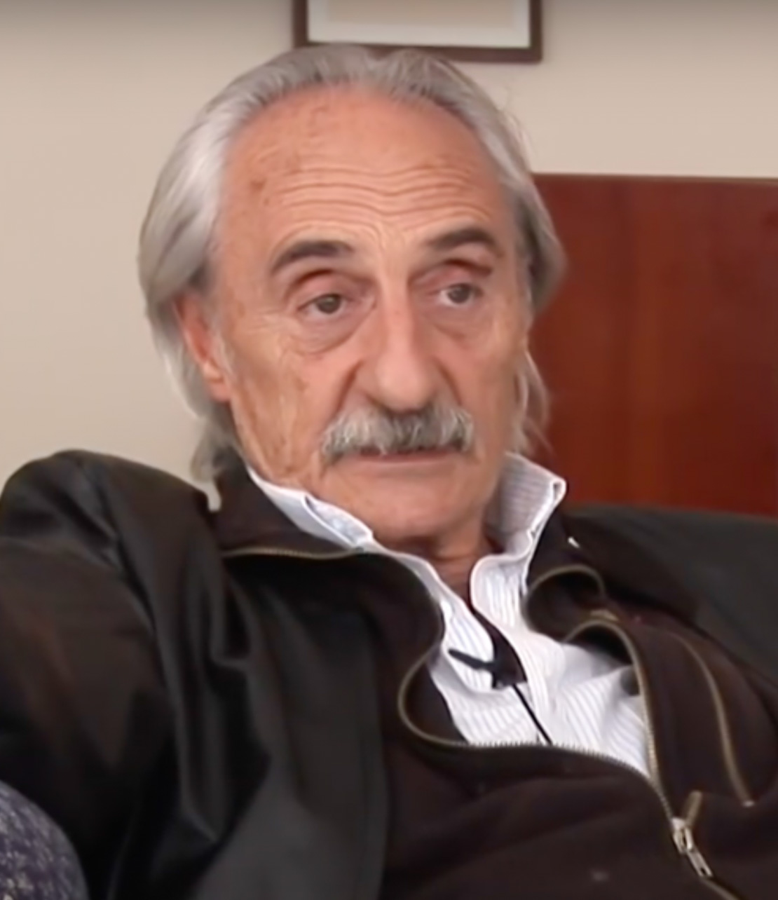
Biografía
Fue un reconocido sociologo, periodista y escritor colombiano. Se destaco por investigar y escribir sobre los problemas sociales del pais, especialmente el conflicto armado, el campesinado y la desigualdad en Colombia, publico cronicas y analisis en el periodico El Espectador, donde narraba historias reales de personas comunes afectadas por la violencia, la pobreza y la falta de oportunidades.
Mapa Mental

Puedes visualizar el desarrollo de la actividad directamente en el navegador o descargar el documento en formato PDF.
El Hambre
Introducción
El texto “El hambre” presenta una reflexión crítica sobre una de las problemáticas sociales más graves que enfrenta la sociedad colombiana, la pobreza y la falta de acceso a la alimentación. A partir de esta historia el autor expone cómo el hambre no es solo una situación individual, sino una realidad que afecta a miles de familias en el país. A lo largo de la lectura se analizan factores como la desigualdad económica, la mala distribución de los recursos, el desempleo y el impacto de la pandemia del COVID-19, los cuales han agravado las condiciones de vida de muchas personas. .
Autor: Gustavo Bolivar Moreno (1966-Actualidad)
Biografía
Es un escritor, guionista y político colombiano. Reconocido por escribir novelas, columnas de opinión y guiones para televisión que suelen tratar temas sociales como la pobreza, la violencia y la desigualdad en el país. También a trabajado como libretista de importantes series de televisión colombianas, entre ellas Sin Senos No Hay Paraíso, Al Amanecer Entenderás La Vida, que tuvieron gran impacto en América Latina.
Glosario
01 Comorbilidades
01 Comorbilidades
Presencia simultánea de varias enfermedades en una persona, lo cual en contextos sociales evidencia también desigualdades en las condiciones de salud y acceso a atención médica.
02 Corrupción
02 Corrupción
Práctica en la que se utiliza el poder público para obtener beneficios personales, lo cual representa una falta ética que deteriora la justicia, la confianza social y el buen funcionamiento del Estado.
03 Desabastecimiento
03 Desabastecimiento
Situación en la que una sociedad carece de los recursos necesarios para satisfacer necesidades básicas, lo cual plantea un problema ético sobre la distribución justa de los bienes.
04 Desolación
04 Desolación
Sentimiento de abandono, tristeza o vacío existencial que afecta al individuo cuando enfrenta situaciones de perdida, sufrimiento o injusticia.
05 Estado de Derecho
05 Estado de Derecho
Principio político y jurídico según el cual todas las personas e instituciones están sometidas a la ley, garantizando derechos, justicia y orden dentro de la sociedad.
06 Funesto
06 Funesto
Se refiere a aquello que trae consecuencias negativas o trágicas para la vida humana o la sociedad, generando sufrimiento o deterioro en el bienestar colectivo.
07 Inflación
07 Inflación
Fenómeno económico caracterizado por el aumento general de los precios, que desde una perspectiva social puede afectar el bienestar y la justicia económica de la población.
08 Informalidad
08 Informalidad:
Representa una forma de exclusión dentro del sistema económico, donde las personas trabajan fuera de las estructuras legales, reflejando desigualdades sociales y falta de justicia económica.
09 Microtráfico
09 Microtráfico
Fenómeno social relacionado con la distribución ilegal de drogas en pequeñas cantidades, que desde una mirada filosófica puede entenderse como consecuencia de problemas estructurales como la pobreza, la marginalidad y la falta de oportunidades.
10 Parlamento
10 Parlamento
Institución política en la que se representa los intereses de la ciudadanía y se elaboran las leyes, siendo un elemento fundamental para el funcionamiento de la democracia.
11 Postración
11 Postración
Estado de abatimiento físico o moral en el que una persona pierde su capacidad de acción o autonomía, reflejando una condición de profunda debilidad humana.
12 Súbito
12 Súbito
Se refiere a un acontecimiento que irrumpe de manera inesperada en la realidad humana, mostrando la fragilidad y la imprevisibilidad de la existencia.
Mapa Mental

Puedes visualizar el desarrollo de la actividad directamente en el navegador o descargar el documento en formato PDF.
Lista de Chequeo
Segundo Corte
El portafolio de evidencias, la lista de chequeo y la evaluación formativa: herramientas para una evaluación educativa crítica
Introducción
La evaluación en la educación ha evolucionado significativamente en los últimos años, pasando de ser un proceso centrado únicamente en la medición de resultados a convertirse en una herramienta fundamental para mejorar el aprendizaje de los estudiantes. En este contexto, la lectura aborda la importancia de implementar estrategias como el portafolio de evidencias, la lista de chequeo y la evaluación formativa, las cuales permiten analizar no solo los conocimientos adquiridos, sino también los procesos, avances y dificultades durante el aprendizaje. A través de los aportes de diversos autores, se resalta la necesidad de transformar las prácticas evaluativas tradicionales hacia enfoques más reflexivos, participativos y centrados en el estudiante, promoviendo así una educación más integral y significativa.
Autor: Elena Barberá (1964-Actualidad)
Biografía
Es una pedagoga española especializada en educación virtual y evaluación del aprendizaje. Es profesora en la Universitat Oberta de Catalunya (UOC) y ha centrado sus investigaciones en el uso de las tecnologías en la educación. Su principal aporte es el desarrollo del portafolio de evidencias como una herramienta que permite reflexionar sobre el proceso de aprendizaje y evaluar no solo resultados, sino también el progreso del estudiante.
Autor: Frida Díaz Barriga (1955-Actualidad)
Biografía
Es una pedagoga mexicana y profesora de la Universidad Nacional Autónoma de México (UNAM), reconocida por sus aportes en psicología educativa. Su trabajo se enfoca en estrategias de enseñanza y evaluación del aprendizaje, destacándose por promover la evaluación auténtica y el uso del portafolio como herramienta para evidenciar el aprendizaje en contextos reales.
Autor: Rick Stiggings (1944-Actualidad)
Biografía
es un experto estadounidense en evaluación educativa y fundador del Assessment Training Institute. Es reconocido por promover la evaluación para el aprendizaje, enfocada en mejorar el rendimiento de los estudiantes mediante herramientas como las listas de chequeo y la retroalimentación continua dentro del aula.
Glosario
Criterios de Evaluación
Son principios o referentes que orientan el juicio sobre un proceso o resultado. Filosóficamente, constituyen los parámetros desde los cuales se valora la realidad, permitiendo distinguir entre lo adecuado y lo insuficiente.
Estrategias de Enseñanza
Se refieren a las acciones planificadas que buscan facilitar la construcción del conocimiento. En un sentido filosófico, son mediaciones entre el saber y el sujeto, que orientan el desarrollo del pensamiento.
Evaluación Formativa
Se entiende como un proceso reflexivo mediante el cual se analiza el desarrollo del conocimiento en el individuo, no con el fin de emitir un juicio final, sino de comprender su progreso y orientar su transformación. Implica una visión dinámica del aprendizaje, donde el error se convierte en una oportunidad de mejora.
Indicadores de Desempeño
Son señales o manifestaciones observables que permiten interpretar el nivel de desarrollo de una acción o conocimiento. Desde la filosofía, se entienden como evidencias que hacen visible lo abstracto del aprendizaje.
Lista de Chequeo
Se concibe como un instrumento que establece criterios previamente definidos para verificar el cumplimiento de determinados aspectos. Filosóficamente, representa una forma de ordenar la realidad a través de categorías que permiten analizar y juzgar acciones o procesos.
Portafolio de Evidencias
Es una recopilación organizada de producciones que representan el proceso de construcción del conocimiento del sujeto. Desde una perspectiva filosófica, permite evidenciar la evolución del pensamiento, la reflexión y la experiencia como elementos fundamentales del aprendizaje.
Proceso de Aprendizaje
Es el conjunto de transformaciones internas que experimenta el individuo al adquirir conocimiento. Desde la filosofía, se entiende como un camino de construcción del saber, en el que intervienen la experiencia, la reflexión y la interacción con el entorno.
Retroalimentación
Es el acto de devolver al sujeto información sobre su desempeño con el fin de generar conciencia y transformación. En un sentido filosófico, implica un diálogo que favorece la reflexión crítica y el autoconocimiento.
Mapa Mental

Puedes visualizar el desarrollo de la actividad directamente en el navegador o descargar el documento en formato PDF.
¿Que es la Sociologia?
Introducción
La lectura ¿Qué es la Sociología? presenta una introducción clara a esta disciplina, explicando su origen, su importancia y su objeto de estudio. A lo largo del texto se destacan conceptos fundamentales como la sociedad, la estructura social, los grupos y las instituciones, los cuales permiten comprender cómo se organizan y se relacionan las personas. De esta manera, la sociología se muestra como una herramienta esencial para analizar y reflexionar sobre la realidad social en la que vivimos.
Autor: Augusto Comte (1798–1857)
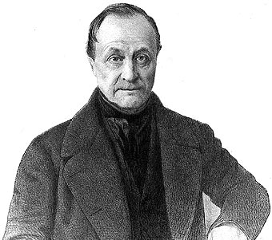
Biografía
Fue un filósofo y sociólogo francés, considerado el padre de la sociología. Propuso el positivismo, que plantea que el conocimiento debe basarse en la ciencia y la observación. Formuló la ley de los tres estados (teológico, metafísico y científico), explicando la evolución del pensamiento humano. Su obra principal es Curso de filosofía positiva.
Autor: Karl Marx (1818–1883)
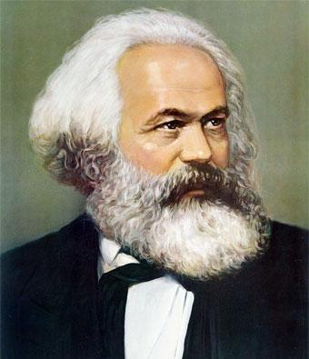
Biografía
Fue un filósofo, economista y sociólogo alemán. Desarrolló la teoría de la lucha de clases, explicando el conflicto entre burguesía y proletariado. Es autor de obras como El Capital y El Manifiesto Comunista. Su pensamiento analiza el sistema capitalista y la desigualdad social, influyendo en la sociología, la economía y la política.
Autor: Max Weber (1864–1920)
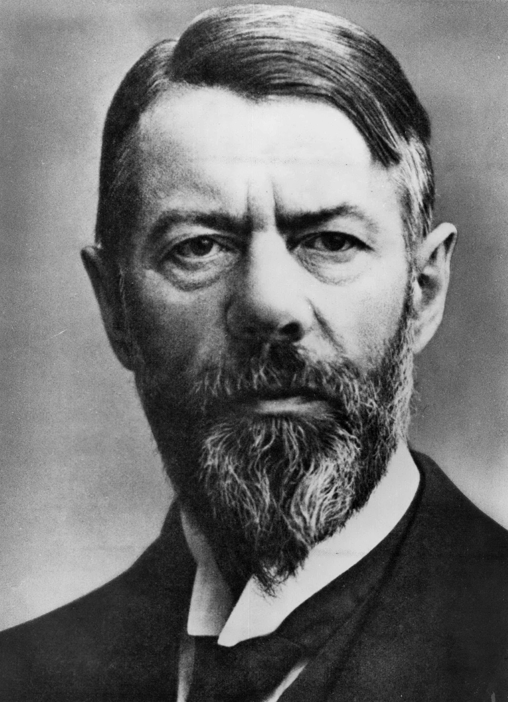
Biografía
Fue un sociólogo alemán (1864–1920) que desarrolló la teoría de la acción social, enfocándose en el sentido que las personas dan a sus acciones. Estudió el poder y la autoridad (tradicional, carismática y legal). Su obra más destacada es La ética protestante y el espíritu del capitalismo, donde relaciona la religión con la economía.
Glosario
01
Autoridad
Es la probabilidad de encontrar obediencia dentro de un grupo para cumplir mandatos específicos.
02
Clase Social
Es la forma de organización de los grupos en la sociedad según su relación con la producción económica.
03
Estatus
Es el prestigio o posición social que tiene una persona según el rol que desempeña.
04
Estratificación
Es la disposición de la sociedad en capas jerárquicas con diferentes niveles de poder, privilegios y responsabilidades.
05
Estructura Social
Es un conjunto de relaciones sociales estables entre actores sociales que desempeñan roles dentro del sistema social.
06
Grupo Social
Son unidades formadas por personas que mantienen relaciones entre sí, con cierta estabilidad y sentido de pertenencia.
07
Institución Social
Son estructuras creadas por la sociedad para regular el comportamiento de los individuos y cumplir funciones específicas.
08
Poder
Es la probabilidad de imponer la propia voluntad incluso en contra de la resistencia de otros.
09
Procesos Sociales
Son formas repetitivas de interacción entre las personas, como cooperación, conflicto o comunicación.
10
Rol Social
Son los comportamientos y formas de actuar que la sociedad espera de un individuo según su posición.
11
Sociedad Industrial
Es el contexto en el que surge la sociología, caracterizado por procesos de industrialización, migraciones del campo a la ciudad y cambios sociales.
12
Sociología
Es la comprensión e interpretación de una problemática social específica mediante comprobaciones, mediciones y verificaciones empíricas, apoyadas en teorías y conceptos
Mapa Mental
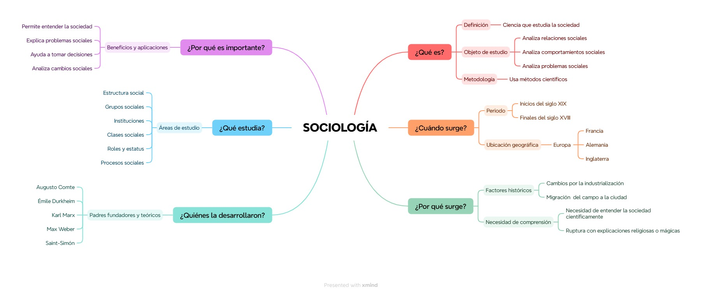
Puedes visualizar el desarrollo de la actividad directamente en el navegador o descargar el documento en formato PDF.
Marginación y Construcción de Ciudadanías Propias
Introducción
Este taller trata sobre la marginación y la forma en que algunas comunidades han sido excluidas de la sociedad en diferentes aspectos. A partir de la lectura, se busca entender cómo estas comunidades, a pesar de las dificultades, logran construir sus propias formas de participación basadas en su identidad y cultura. También invita a reflexionar sobre la importancia de valorar la diversidad y promover una sociedad más justa e incluyente.
Autor: Paulo Freire (1921-1997)
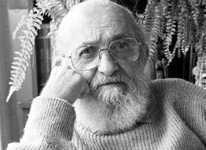
Biografía
Fue un educador y filósofo brasileño, reconocido por desarrollar la pedagogía crítica. Dedicó su vida a mejorar la educación, especialmente de las personas más pobres. Su idea principal era que la educación no debía ser solo memorizar, sino ayudar a las personas a pensar, cuestionar y transformar su realidad. Su obra más importante es “Pedagogía del oprimido”, donde explica cómo la educación puede liberar a las personas de la opresión.
Autor: Catherine Walsh (1951-Actualidad)
Biografía
Es una académica e investigadora que ha trabajado principalmente en América Latina, especialmente en Ecuador. Es reconocida por sus aportes a la interculturalidad crítica y el pensamiento decolonial. Sus ideas se enfocan en cuestionar las desigualdades entre culturas y en defender que las comunidades deben ser reconocidas desde sus propios saberes.
Glosario
01 Ciudadanias Propias
01 Ciudadanias Propias
Son formas en que una comunidad participa en la sociedad desde su propia cultura, identidad y manera de ver el mundo, sin tener que adaptarse completamente a lo que impone la sociedad dominante.
02 Comunidades Marginadas
02 Comunidades Marginadas
Son grupos de personas que quedan por fuera de las oportunidades sociales, económicas y políticas, no porque quieran, sino porque el sistema o la sociedad los excluye.
03 Conciencia Critica
03 Conciencia Critica
Es cuando una persona no solo vive la realidad, sino que la analiza, la cuestiona y entiende las injusticias que existen, con la intención de cambiarlas.
04 Diversidad Cultural
04 Diversidad Cultural
Es la existencia de diferentes formas de pensar, vivir, creer y actuar dentro de una misma sociedad, lo cual la enriquece, aunque muchas veces no se respete como debería.
05 Empoderamiento
05 Empoderamiento
Es el proceso mediante el cual una persona o comunidad gana seguridad, conocimiento y capacidad para tomar decisiones y defender sus derechos.
06 Exclusion
06 Exclusion
Es el acto de dejar por fuera a personas o grupos, impidiéndoles participar o acceder a derechos, servicios o beneficios dentro de la sociedad.
07 Hegemonia
07 Hegemonia
Es el dominio que ejerce un grupo sobre otros, no solo con poder económico o político, sino también imponiendo su forma de pensar como si fuera la única válida.
08 Igualdad de Oportunidades
08 Igualdad de Oportunidades:
Es la idea de que todas las personas deberían tener las mismas posibilidades de acceder a educación, trabajo y bienestar, sin importar su origen.
09 Interculturalidad Critica
09 Interculturalidad Critica
Es la relación entre culturas donde no solo hay respeto, sino también análisis de las desigualdades, buscando que ninguna cultura sea vista como superior a otra.
10 Justicia Social
10 Justicia Social
Es el principio que busca que todas las personas tengan condiciones justas de vida, con acceso equitativo a derechos, recursos y oportunidades.
11 Opresion
11 Opresión
Es una forma de dominación en la que un grupo limita la libertad y los derechos de otro, manteniéndolo en una posición de desventaja.
12 Pedagogía crítica
12 Pedagogía crítica
Es una forma de enseñar que no solo transmite conocimientos, sino que busca que las personas piensen, cuestionen su realidad y actúen para transformarla.
13 Sociedad dominante
13 Sociedad dominante
Es el grupo que tiene mayor poder dentro de una sociedad y que impone normas, valores y formas de vida que los demás muchas veces deben seguir.
Mapa Mental
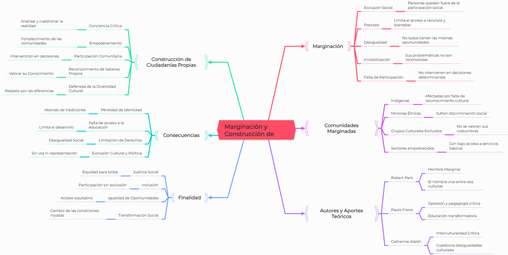
Puedes visualizar el desarrollo de la actividad directamente en el navegador o descargar el documento en formato PDF.